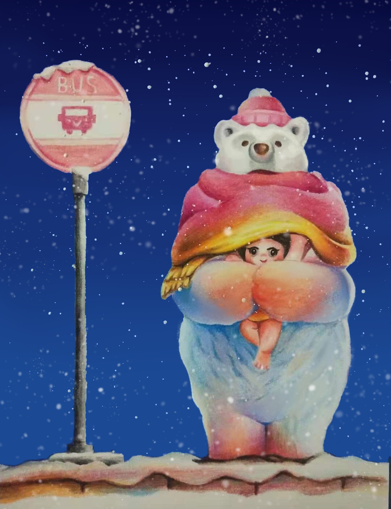
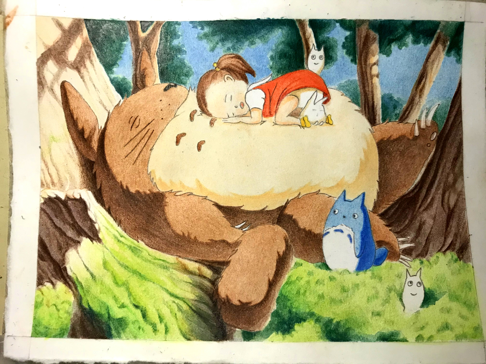
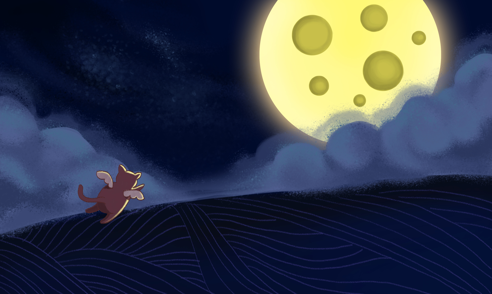
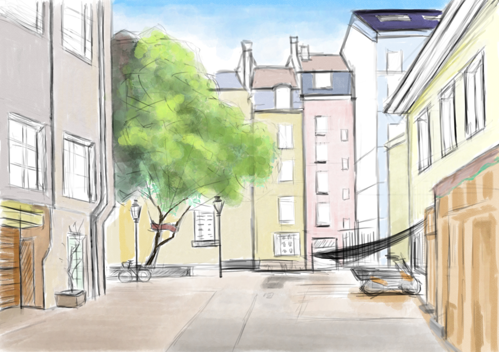
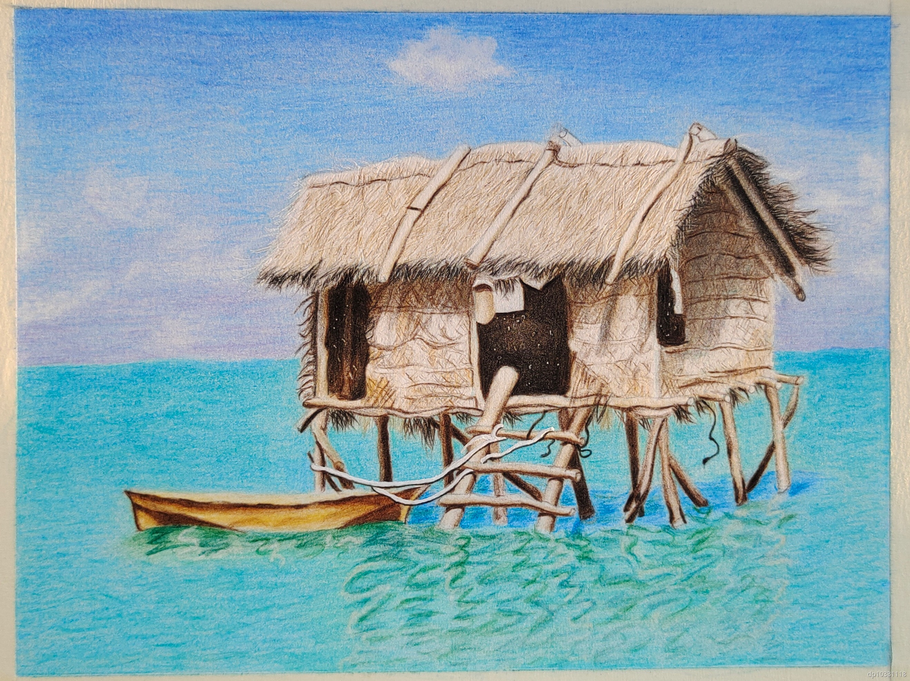
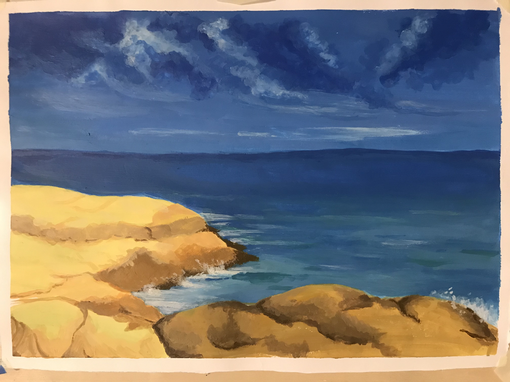

01 / Ground
Build the surface.
Different supports were tested before the image began. Gouache, pastel, marker, and acrylic established the first colour layer; further acrylic coats built density and variation on top.
Undergraduate Portfolio · Mixed Media
A study of the body built from colour, paper, relief, and interruption. Scroll to move through the making process.
01 / Ground
Different supports were tested before the image began. Gouache, pastel, marker, and acrylic established the first colour layer; further acrylic coats built density and variation on top.
02 / Assembly
Paper elements were cut, glued, and combined to make colour blocks extend beyond their original boundaries. The composition grows through overlaps rather than a single continuous surface.
03 / Body
Each coloured piece becomes a part of the body. Cut card introduces raised, white muscle-like forms, so anatomy is read through texture, rhythm, and the pressure of hand-made material.
04 / Composition
The finished work brings painted fields and relief collage into one unstable figure: a body assembled through contrast, interruption, and changing spatial depth.
Final work
Selected works
A group of illustrations, studies, and landscapes from the wider undergraduate portfolio.






43-page document
The full PDF is preserved in a separate reader, including every page of the original portfolio.
Open the full portfolio